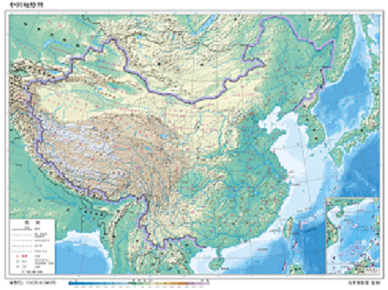

全选 重置
自然地理
- 大气
- 气候类型分布
- 年均温
- 1月等温线
- 7月等温线
- 温度带分布
- 年降水总量
- 7月等降水量线
- 1月等降水量线
- 年太阳辐射量
- 1月海平面气压场与风向
- 7月海平面气压场与风向
- 地形
- 三大阶梯
- 主要山脉
- 主要盆地
- 主要平原
- 主要丘陵
- 主要高原
- 水文
- 主要河流
- 主要流域
- 内外流区
- 河流补给类型
- 植被与土壤
- 植被类型分布
- 土壤类型分布

人文地理
- 人口与城市
- 人口密度分布
- 人口数量分布
- 人口增长率
- 城市化率分布
- 工、农业与交通
- 四大地区
- 主要粮食作物分布
- 主要经济作物分布
- 主要煤炭产地
- 主要油气产地
- 主要金属矿产产地
- 主要公路网
- 主要铁路网
- 主要内河航运
国土整治与开发
- 主要环境问题
- 水土流失
- 土地荒漠化
- 土地次生盐碱化
- 森林破坏
- 酸雨
- 水污染
- 主要自然灾害
- 洪涝
- 旱灾
- 寒潮
- 地震
- 泥石流与滑坡
- 沙尘暴
- 台风